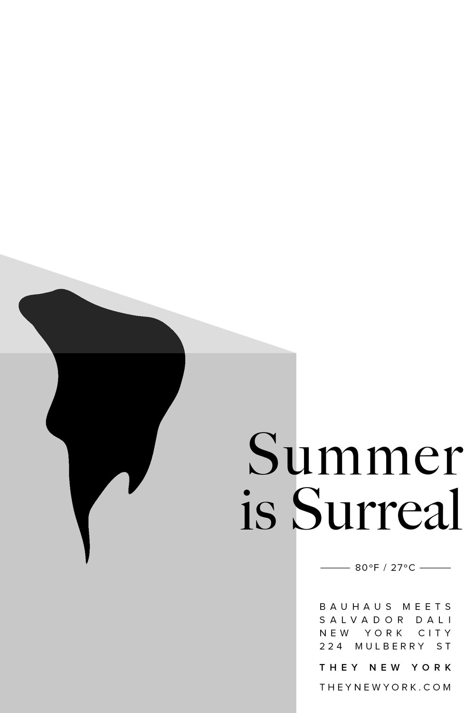
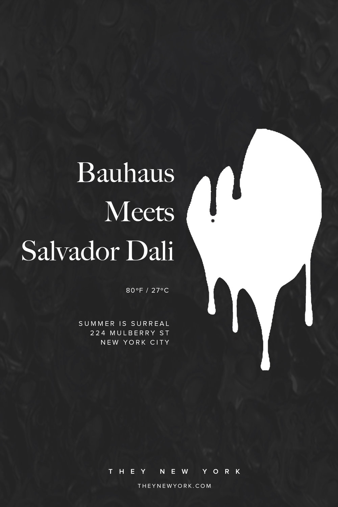
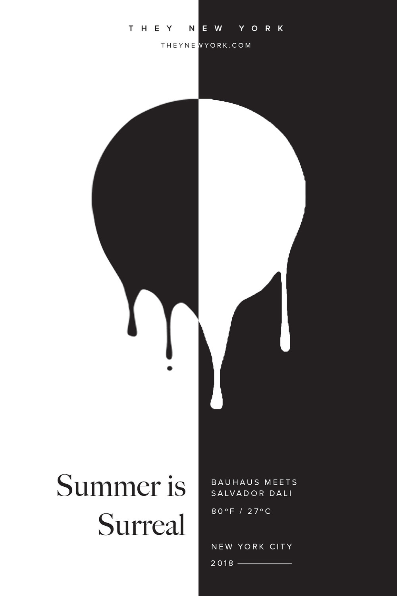
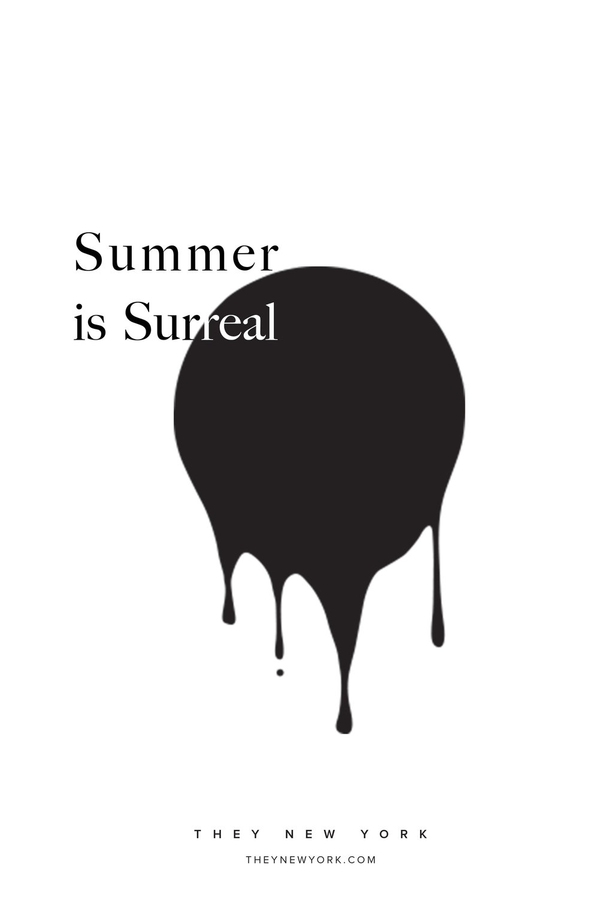

THEY NY Summer Campaign
Here are four versions of posters I designed for next Summer’s campaign. It was inspired by Salvador Dali meets Bauhaus. The idea was to incorporate surrealism into THEY NY’s signature design, a circle. Taking aspects of the summer heat, we wanted the shoe to appear as if it were melting.



